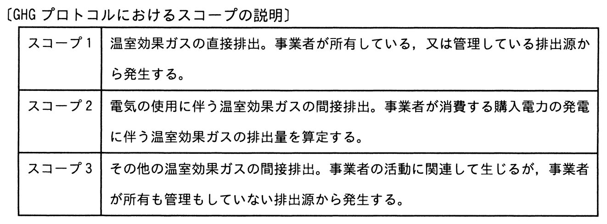

温室効果ガスの排出量の算定基準であるGHGプロトコルでは，事業者の事業活動によって直接的，又は間接的に排出される温室効果ガスについて，スコープを三つに分けている。事業者X社がデータセンター事業者であるときの，スコープ1の例として，適切なものはどれか。

ア X社が自社で管理するIT機器を使用するために購入した電力の，発電に伴う温室効果ガス
イ X社が自社で管理するIT機器を廃棄処分するときに，産業廃棄物処理事業者が排出する温室効果ガス
ウ X社が自社で管理する発電装置を稼働させることによって発生する温室効果ガス
エ X社が提供するハウジングサービスを利用する企業が自社で管理するIT機器を使用するために購入した電力の，発電に伴う温室効果ガス